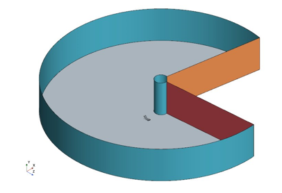
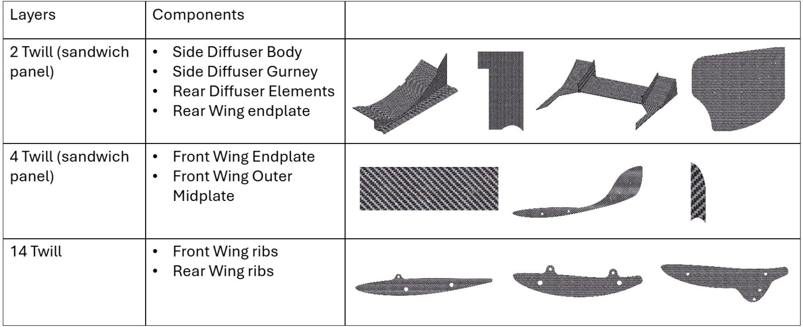
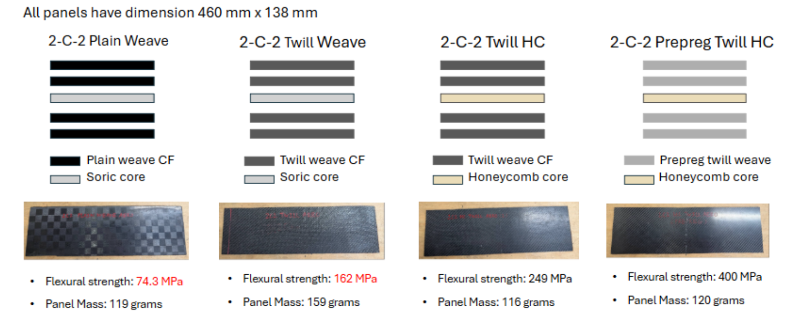
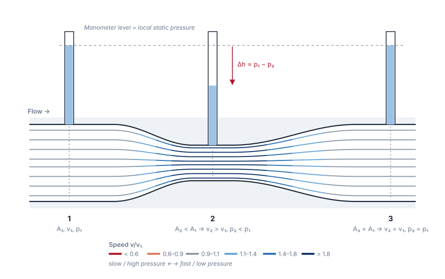
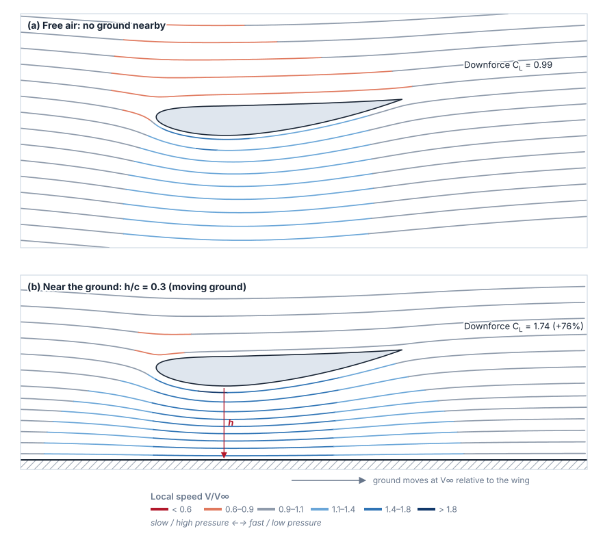
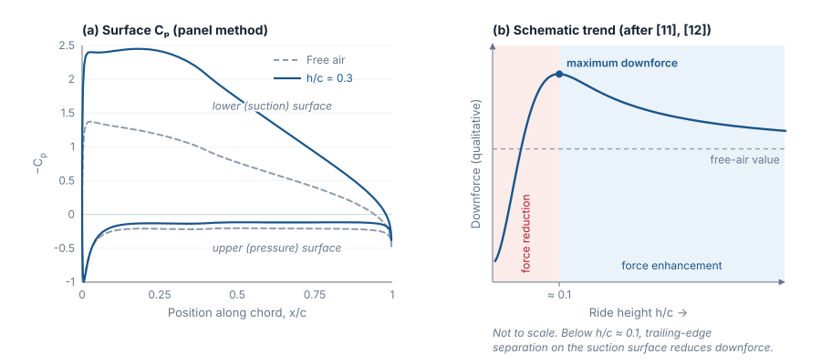
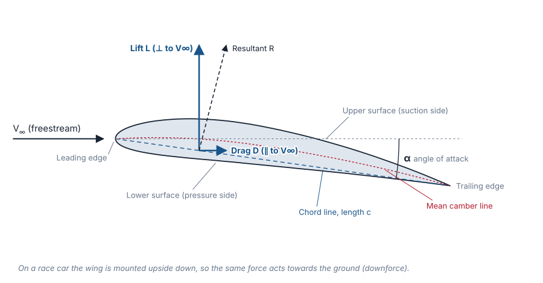
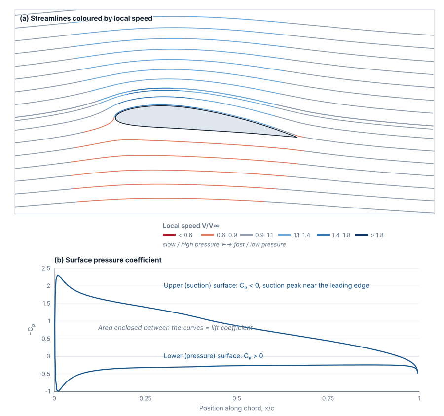

Appendices
Appendix A. CFD Simulation Setup
Table A1 lists the settings used for the cornering simulations in Sections 5 and 6. To model cornering, the car is placed in an annular-sector domain centred on the corner centre, so that the car follows a curved path of constant radius (Figure A1).

| Setting | Value |
|---|---|
| Software | Siemens Simcenter STAR-CCM+ |
| Geometry | Simplified CFD model of the full car (Section 5.1) |
| Domain | Annular sector centred on the corner centre (Figure A1) |
| Turbulence model | Steady k-ω SST RANS |
| Corner radius | 9.125 m |
| Vehicle speed | 11.1 m/s (40 km/h); lateral acceleration v²/r ≈ 13.5 m/s² (1.38 g) |
| Ground and wheels | Moving ground and rotating wheels |
| Volume mesh | Trimmed (hexahedral) cells |
| Surface mesh | Surface remesher, triangular cells |
| Base size | Varies between simulations; the minimum surface sizes below are given as percentages of the base size |
| Prism layers: car body | 8 layers, 8 mm total thickness; minimum surface size 6.25% of base |
| Prism layers: wings | 10 layers, 8 mm total thickness; minimum surface size 3.125% of base |
| Cell count | About 30 million |
| Iterations | 2000 (originally 3500; Section 5.3) |
| Reported values | Mean of the last 300 iterations of each force monitor |
Appendix B. Flat Panels
Figures B1 and B2 present the composite layup schedules for the aerodynamic components and the flat-panel layup configurations manufactured via vacuum infusion (Section 7.1), together with their flexural strengths and panel masses.


Appendix C. Venturi Effect
When air flows through a narrowing passage, it speeds up and its static pressure falls. This is the Venturi effect. It follows from two conservation laws. At FSAE speeds the Mach number is below 0.1, so the air can be treated as incompressible [10]. Conservation of mass then requires the same volume flow rate through every cross-section of the passage:
so wherever the area A falls, the velocity v rises. Along a streamline in steady flow, with friction neglected, Bernoulli’s equation states that the sum of static and dynamic pressure stays constant [10]:
Combining the two equations gives the pressure drop between the inlet and the throat:
Figure C1 shows this in a Venturi tube. The streamlines bunch together in the throat as the flow speeds up, and the manometer columns show the static pressure falling there. In the diverging section after the throat, the flow slows down again and the pressure recovers. In a real tube the recovery is incomplete because of friction, and if the expansion is too steep the boundary layer separates from the wall and most of the recovery is lost. As an example, at the 11.1 m/s cornering speed in Table A1, halving the flow area (A1/A2 = 2) gives an ideal pressure drop of ½ × 1.225 × 11.12 × (22 − 1) ≈ 226 Pa.

The same principle drives the underbody of a race car. The floor and the road form a channel whose narrowest section lies under the car. The diffuser at the rear is the diverging section: by recovering pressure back to ambient at the exit, it lets the pressure under the car fall further below ambient and draws more air through the channel [12], [13]. This produces the diffuser and side-diffuser downforce reported in Tables 2 and 3. As in a Venturi tube, a diffuser that expands too quickly suffers flow separation and loses much of this effect. The same idea applies on a smaller scale to the slot gaps between wing elements and to the gap between the front wing and the ground (Appendix D).
Appendix D. Ground Effect
Ground effect is the change in aerodynamic forces on a body when it runs close to the ground. For an inverted wing or a car underbody, the ground limits how the air can flow beneath the body, so the suction surface and the ground form a converging–diverging channel like the Venturi tube in Appendix C. The air speeds up through the gap, the pressure on the suction surface falls further, and downforce increases [12].
Figure D1 shows this for an inverted NACA 4412 wing at 4°, calculated with an inviscid panel method. The ground is represented by a mirror image of the wing, which is the inviscid equivalent of a moving ground. At a ride height of h/c = 0.3, the streamlines under the wing are squeezed together and the flow is faster than in free air. The predicted downforce coefficient rises from 0.99 to 1.74 (+76%). Figure D2a shows where the extra load comes from: suction on the lower surface increases along the whole chord, while the upper surface changes very little.

Downforce does not keep rising as the wing gets closer to the ground. In wind-tunnel tests of a single-element wing in ground effect, Zerihan and Zhang [11] found that downforce increased as the ride height was reduced to about 10% of the chord. Below that height, downforce fell because the wing stalled through trailing-edge separation of the boundary layer on the suction surface. Moving the wing closer to the ground strengthens the suction peak, which steepens the adverse pressure gradient towards the trailing edge until the boundary layer can no longer stay attached. Zhang et al. [12] call the region where downforce rises “force enhancement” and the region below the maximum “force reduction” (Figure D2b). An inviscid method cannot capture this separation, which is why it overpredicts downforce close to the ground.

Ground effect matters for the FSAE car in three ways:
- The front wing runs close to the ground, so its downforce depends on ride height. Pitch under braking and roll in cornering change that height, and therefore the front wing load.
- The floor and diffusers produce downforce through ground effect, so their output also depends on ride height and on how cleanly air reaches them. This is why the diffuser and side-diffuser downforce is reported alongside the wing results in Section 6.
- On track, the road does not move relative to the air, so there is no ground boundary layer. The CFD therefore uses a moving ground and rotating wheels (Table A1). A stationary ground would grow a boundary layer that does not exist on track and would distort the underbody flow [12].
Appendix E. How Airfoils Work
An airfoil is the cross-section of a wing, shaped to produce a large force perpendicular to the oncoming flow (lift) for a small force along it (drag). Figure E1 names its main features. The chord line joins the leading edge to the trailing edge, and its length is the chord c. The mean camber line lies halfway between the upper and lower surfaces, and its maximum distance from the chord line is the camber. The angle of attack α is the angle between the chord line and the freestream. The NACA 4412 used in these figures has 4% camber at 40% of the chord and a maximum thickness of 12% of the chord.

E.1 How lift is produced
An airfoil produces lift by turning the oncoming flow. Its camber and angle of attack deflect the air downwards behind the trailing edge (Figure E2a), and by Newton’s third law the air pushes the airfoil the opposite way. The same effect can be described in terms of pressure. For air to follow a curved path, the pressure must change across the streamlines, falling towards the centre of curvature [14]. Above the airfoil the streamlines curve around the upper surface, so the pressure there falls below ambient; below the airfoil it rises slightly above ambient. Bernoulli’s equation (Equation C2) links this to speed: the low-pressure regions are where the flow is fastest, shown in blue in Figure E2a.
A common explanation, the “equal transit time” theory, claims that air over the longer upper surface must speed up to rejoin the air from the lower surface at the trailing edge. This is false. Air over the upper surface actually reaches the trailing edge well before the air below it, and nothing requires the two to meet [14].
The amount of lift is set by the sharp trailing edge. Viscosity makes the flow leave the trailing edge smoothly from both surfaces instead of wrapping around it. This is known as the Kutta condition, and it fixes the circulation around the airfoil and therefore the lift [10]. The panel method used for Figures D1, D2 and E2 applies this condition.

Figure E2b plots the pressure coefficient around the surface. The upper surface has a strong suction peak just behind the leading edge, and most of the lift comes from this suction rather than from overpressure on the lower surface. The area enclosed between the two curves equals the lift coefficient.
E.2 Lift, drag and stall
Lift and drag are expressed as dimensionless coefficients based on the dynamic pressure and a reference area S:
Both forces grow with the square of speed. The ratio CL/CD measures aerodynamic efficiency, and is the efficiency metric used for the full car in Section 6. Thin-airfoil theory predicts that CL rises linearly with angle of attack at about 2π per radian (about 0.11 per degree), and that camber shifts this line so that a cambered airfoil already produces lift at α = 0 [10].
The linear rise has a limit. Behind the suction peak the pressure rises again towards the trailing edge, an adverse pressure gradient that slows the boundary layer near the surface. As α increases, the suction peak grows and this gradient steepens until the boundary layer separates from the upper surface. The airfoil then stalls: lift falls and drag rises sharply.
E.3 Application to race-car wings
A race-car wing is an airfoil mounted upside down, so its lift acts towards the ground as downforce. Downforce increases the vertical load on the tyres, and so the grip available for cornering, braking and acceleration, without adding mass [13]. Three features of FSAE wings follow from the airfoil behaviour described above:
- High-lift, low-Reynolds-number airfoils. FSAE cars run at low speeds, so airfoils such as the S1223 [1], designed for high lift at low Reynolds numbers, are used.
- Multiple elements. A single element stalls at a modest angle of attack. Splitting the wing into several elements with slot gaps lets higher-pressure air from the pressure side of one element flow onto the suction side of the next, so each element starts with a fresh boundary layer and can run at a much steeper angle without separating (Section 6.2.1).
- Ground proximity. The front wing runs in ground effect, which increases its downforce but makes it sensitive to ride height (Appendix D).